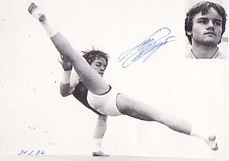

Sepp Zellweger (SUI)
1983 European R Bronze
Medalist
1986 DTB Cup R and PB Bronze Medalist

Medal Total
European Championships: 1 Bronze
A 24-time Swiss champion, Zellweger was one of the best Western European gymnasts of the 1980s. Today, he's the Sales and Marketing Manager of Client Foundations at CSFB (Credit Suisse First Boston).
Competition Results
1980
Jr. European Championships: 20th AA
1981
European Championships: 12th AA
World Championships: 14th Team, 34th AA
1982
GDR-URS-SUI Meet: 6th AA
Swiss Championships: 4th AA, 1st PH, 1st R, 1st PB
1983
European Championships: 41st AA, 3rd R
World Championships: 10th Team, 19th AA
1984
Chunichi Cup: 14th AA, 6th R, 8th PH
GDR-SUI Dual Meet: 2nd Team, 5th AA
Olympic Games: 5th Team, 11th AA, 8th PH, 8th R
Tokyo Cup: 5th R, 5th PB, 7th PH
1985
European Championships: 10th AA, 4th R, 5th PB
Hungarian International: 3rd PB
Pre-Worlds: 10th AA, 4th PH, 4th R, 4th PB
University Games: 33rd AA
1986
Ahoy Cup: 6th AA
DTB Cup: 6th AA, 3rd R, 3rd PB, 4th V
Gander Memorial: 3rd AA
FRG-SUI Dual Meet: 1st AA
GDR-SUI Dual Meet: 2nd Team, 1st AA
1987
American Cup: 7th AA
Belgian Gym Masters: 11th AA, 3rd FX, 3rd R
Blume Memorial: 2nd AA, 1st FX
Cottbus International: 14th AA, 2nd R
European Championships: 18th AA, 5th R, 8th PB
Gander Memorial: 3rd AA
GDR-SUI Dual Meet: 2nd Team, 2nd AA
International Mixed Pairs: 16th Team
Medico Cup: 3rd AA, 1st R, 2nd FX, 2nd PB, 3rd PH
ROM-SUI Dual Meet: 2nd AA
Shenyang International: 3rd AA
SUI-BUL-FRA Meet: 3rd AA
University Games: 10th AA, 6th PH, 8th V
World Championships: 16th Team, 15th AA
1988
Arena Cup: 8th AA
European Cup: 9th AA
French International: 12th AA, 3rd FX
GDR-HUN-SUI Meet: 1st AA
Helvetica Artistic Gymnastics Day: 2nd AA
This page was created on December
23, 2004 and was last updated on February 15, 2021.
© Gymn Forum